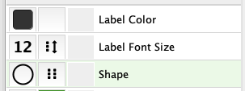
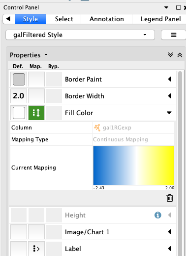
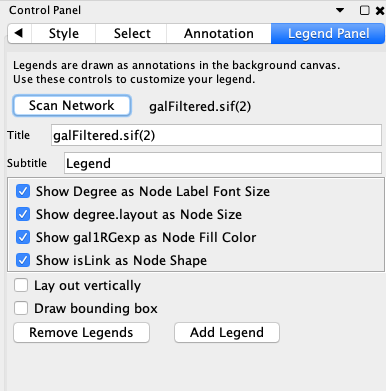
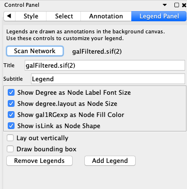

Template Tutorial
The reveal framework includes a large set of features and components. This template reviews a core set of components that are useful for Cytoscape tutorials. See links below for complete documentation.
- Cytoscape Tutorials Using Reveal
- - Detailed information on all reveal components used for Cytoscape tutorials
- General reveal.js documentation
- - Complete documentation for the reveal framework
To get started, open module.html and index.html located in protocols/module/template-app. Review how module.htlm is pulled in from the index.html wrapper.
Template Tutorial
Introduction
Use the first slide to introduce your app/workflow and the tutorial content, including links to your tool. If you don't have a dedicated setup slide, any
Template Tutorial
Recommended Style
To help make the content as easy as possible to grasp, we are using highlighted and bold text as follows:
- Use the
highlight tag for any actions you want the user to take. Example: "To open a session file, selectFile → Open... " - Use bold text for any other item you want to emphasize that is not an action. Example: "...data is visible in the Node Table".
Introduction
This documents the app Legend Creator. Available now at apps.cytoscape.org:
It can generate a legend that illustrates the visual mapping used in your graphs. :
There is a variety of different features of the Legend Creator, but its primary function is to add a color gradient to quantify the mapping of fill color in a legend. This is a common function in Cytoscape graphs and hard to recreate accurately if you use downstream programs (e.g., Adobe Illustrator) to annotate graphs for publication.

Background
First, let's review how Styles are used in a presentation in Cytoscape. Within a Style, some variables can with be fixed, that is, the same across all nodes, while other are mapped from a variable in the node table to an attribute of the data.
Mappings can be continuous or discrete. The icon in the center column of the styles shows a double headed arrow for the right side of the icon for continuous mappings, and dots for discrete mappings.
Continuous legends are made from numerical values, where the range is determined by looking at the node table, such as expression level. We’ll look at those first.
Note: If you use Passthrough Mappings, they will not create a legend entry, and are not discussed here.
Setup
If you need to download, install or update Cytoscape, you should look here. TODO
The AppManager is the key to extending Cytoscape. Open the AppManager, find Legend Creator, and install it. As you can see, there are hundreds of apps available to extend Cytoscape

Control Panel
In the Legend Control Panel, there is a button to scan the network, fields for the legend title and subtitle and then check boxes for the continuous and discrete mappings that are defined in the current style.
The Scan button will tell the program to traverse the style sheet and all of the nodes in the graph to figure out what legends to add and what values exist in the network so it can decide how to build each legend entry. This scan happens automatically whenever you load or switch networks, so you only have to push the button manually if you edit the styles. Usually, it will auto scan, and be ready to go, but the phase when you make the legend is when you often start monkeying with the style settings, and in that case you should manually rescan the network after editing the style and before re-creating a legend. Note that the legends are annotations, and as such, are not updated dynamically
The title and subtitle are just text fields. The name of the network goes into the default title, but you can enter whatever text you want. You don’t have control over the font, size or alignment at this point, but I’ll show you how to edit those later.
Moving down the control panel, we see the list of mappings. They show the name of the column in the node table followed by the name of the attribute to which it is mapped. In this example, we have color mapped to our variable called gal1Rexp, shape is mapped to a column called Function, and the size of a node is mapped to the number of neighbors, or its degree.
Leave off the Vertical Layout option, to position the legend along the bottom of the graph.
Check the box Draw Bounding Box to include a rectangle surrounding all the legend entries.
Click Add Legend button on the bottom of the panel.
Continuous legends are made from numerical values, where the range is determined by looking at the node table, such as expression level. We’ll look at those first.
Note: If you use Passthrough Mappings, they will not create a legend entry, and are not discussed here.

 



- Search hundreds of pathways directly from Cytoscape
- Import pathways as pathway or network
- Visualize data or use for network analysis
Kutmon (2014) WikiPathways App for Cytoscape: Making biological pathways amenable to network analysis and visualization. F1000Res, 2014 Jul 1
Template Tutorial
Two-column slide layout
The two-column slide layout is convenient for placing text. This example shows two lists of URLs.
Cancer pathways
Disease pathways
Template Tutorial
Animated List Elements
Here's an example of an animated list. Click the down or right arrow to step through the list.
WikiPathways App Features
- Search hundreds of pathways directly from Cytoscape
- 25 species represented
- Import pathways as pathway or network
- Visualize data or use for network analysis
Template Tutorial
CyBrowser and CyCommands interactivity
CyBrowser allows for viewing any html page in Cytoscape. Together with CyCommands, this makes it possible to automate tutorial content with buttons and/or links. For example, if the tutorial describes how to load a network, a button to automatically load the network can be included.
With some css and javascript included in the Cytoscape tutorial style it is possible to selectively view content exclusively in CyBrowser and regular browser, respectively.